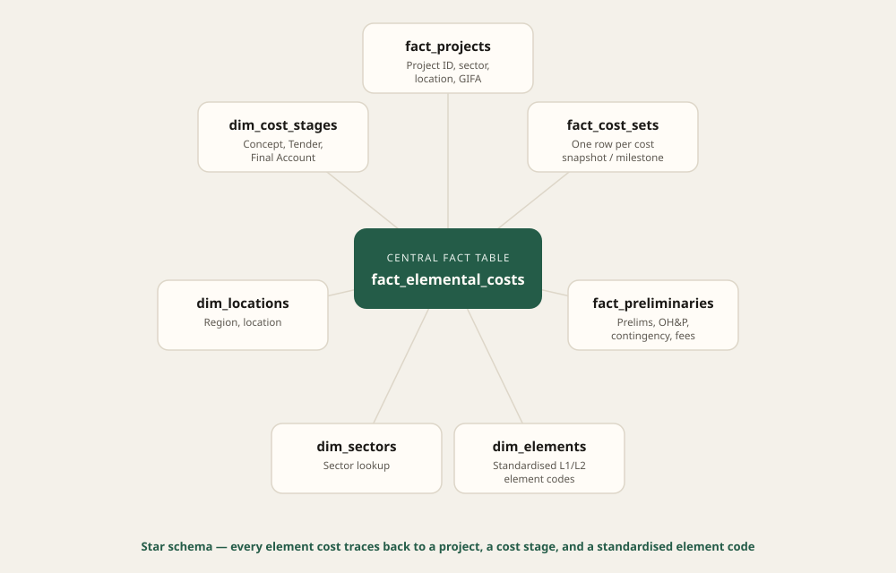

Research proposal · Applied AI · Data strategy
Applied AI for Construction costs
Costplan is a quantity surveying consultancy where project cost data lived in individual Excel workbooks, one per project. Comparing costs across projects meant manually reconciling different spreadsheets, relying on memory and experience, and with no formal database, benchmarking new estimates against past projects was done the same way.
What centralised data could unlock
Once the data problem was clear, the real question was what centralising it would actually enable. I pitched the company's directors on three capabilities the prototype then showed: Power BI dashboards for benchmarking projects against each other, a natural-language layer for querying the data through a chat interface, and automated drafting for client reports — the same defined structure, rebuilt by hand, every time.
The data model
Construction cost data has real structure once you look past the spreadsheets. Costs break down into three levels. Level 1 is the top-line summary — "the frame cost £800k." Level 2 breaks that down into standardised elements (steel, concrete, decking), following a structure regulated by an industry body so that every contractor prices projects the same way, which is what makes comparison across projects possible at all. Level 3 goes further still, down to individual components within an element, like the layers of paint on a wall. Each level rolls up into the one above it: Level 3 into Level 2, Level 2 into Level 1.
That structure is also what makes old data worth keeping. Location and inflation indices are published by governing bodies too, so a ten-year-old project's costs can still be adjusted and compared fairly against a new one. Most of that historical data was sitting unused simply because nothing connected it together. My research was aimed at fixing this.

Full schema definitions and the ETL logic that populates them are in the repo.
The AI layer
Report drafting for clients was manual and repetitive — the same structure, rebuilt by hand, for every project. I prototyped two Groq-powered features to explore whether that could be solved properly rather than just sped up, each with its own guardrail problem to work through.
The query assistant takes a question like "Show top 10 Level2
elements by total cost" and returns generated SQL plus results —
restricted to read-only, single-SELECT queries, with any
mutating or DDL keyword blocked outright before execution.
The report-drafting prototype generates the client-facing tender report narrative itself — executive summary, commercial analysis, next steps — while keeping every number locked to a "deterministic facts" object built directly from the database. Groq only writes the surrounding prose, explicitly instructed never to alter or invent a figure, with a templated fallback if the API call fails outright. The point was testing whether the model could be trusted with the writing without ever being trusted with the numbers.
Where this landed
I presented the proof of concept to all three company directors, split into two phases: Phase 1 covering the database and Power BI benchmarking dashboards, Phase 2 extending it with the AI layer. It was signed off, with a budget approved to build it out properly.
What I'd do next
- Take the pipeline from proof of concept to production, with proper monitoring and alerting around pipeline runs.
- Add automated tests around the AI SQL guardrails specifically, since that's the highest-risk surface in the system.
- Extend the AI layer with RAG, grounding the query assistant and report drafting in a wider set of project documents, not just the structured database fields.